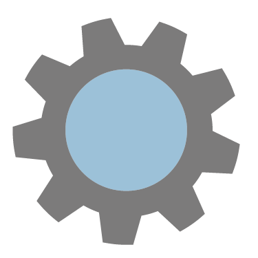

OVER
“Fietsen met een verleden, Klaar voor de toekomst”, dat is het motto waarmee er bij Re_Cycle wordt gewerkt. In Nederland is de fiets het meest gebruikte vervoersmiddel, er zijn zelfs meer fietsen dan inwoners; en dat is vooral terug te zien in Amsterdam. Maar helaas loopt het niet altijd goed af met de fietsen. Zo belanden veel fietsen in de grachten, en staan fietsen soms jarenlang op dezelfde plek. Dit kan natuurlijk ook anders. Daarom is Re_Cycle sinds 2004 bezig met het bevorderen van de leefomgeving door te voorkomen dat dit soort dingen met fietsen gebeuren.
Re_Cycle is een bedrijf waar de fiets voorop staat. Het liefst zorgen ze ervoor dat elke fiets een nieuw leven krijgt. Bij Re_Cycle worden fietsen met een verleden weer omgebouwd tot een fiets die gloednieuw lijkt. Zo dragen ze een steentje bij voor een groenere wereld.
Ook over het personeel is bij Re_Cycle goed nagedacht. Zo bieden ze een arbeidsmatige dagbesteding aan mensen met bijvoorbeeld een verslaving. Iedere week zijn er veel mensen die ze een plek kunnen geven voor een dagbesteding. Re_Cycle helpt dus zowel mens als natuur.